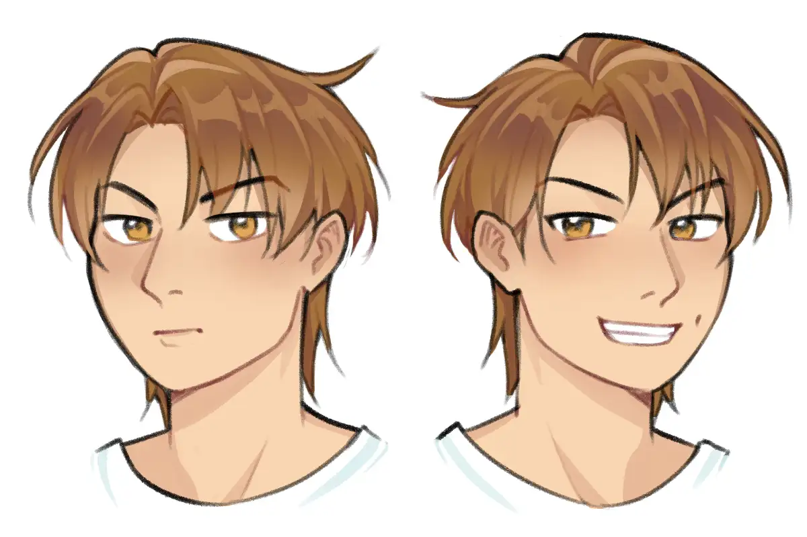
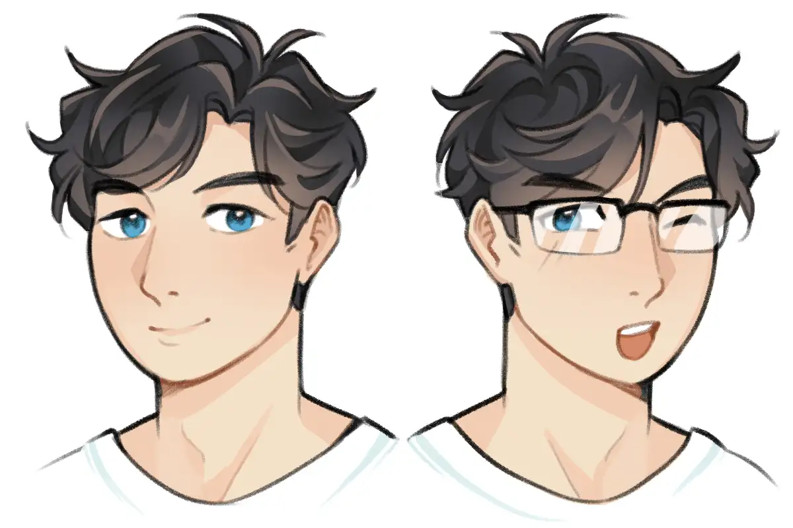

Date of Birth: January 2018
Original Concept: Roleplay OC for slice-of-life theme, an architecture student who had high hopes to help others.
Current personality: Grounded with hint of skepticism, boisterous, foul-mouthed, sincere.
Emotional theme: Rebellion against intimidating authority, to appear as bigger person than he is.
Life value: Having many friends, taking care of self and people who rely on him, to be seen as down-to-earth, maintaining self-individuality
Occupation in canon: Freelance artist (sometimes teaching)
Role in Plurality: Protector
Preferred clothes: Jacket/hoodies, jeans, plaid shirt for outside look. White tees and short pants for home use. Likes converse-type of shoes or boots.
Enlisted as Reconnaissance Agent in Providence

Date of Birth: September 2019
Original Concept: Roleplay OC for fantasy/battle theme, an inept and awkward man who focused solely on grinding missions.
Current personality: Composed but a playful tease, verbose, soothing presence, snarky.
Emotional theme: Not repeating generational trauma, become the person his younger self needs.
Life value: Building secure life, to be considered as reliable and wise figure, experiencing light-hearted situations, embodying dignity.
Occupation in canon: Counsellor/therapist in training
Role in Plurality: Caregiver
Preferred clothes: Turtleneck sweater, trench coat, vest for formal look. Long-sleeved shirt and cargo pants for home use. Prefer shoes without shoelaces.
Enlisted as Research Agent in Providence
Ship Dynamic: Good Cop, Bad Cop ║ Straight Man and Wise Guy ║ Tareme Eyes x Tsurime Eyes
Relationship: Initially they knew each other through mutual friend, but since Charlie was griefing and experiencing outrage related to this person, he seeked comfort from Al. Charlie and Alaric were complete opposite to the point they felt mutual despise, Charlie thought Al was too soft and "couldn't stand for himself", while Al thought Charlie was arrogant and.. scary. Yet the very weakness Charlie perceived from Al, is the cause that made him fall in love first. Charlie was already struggling with sexuality, hence they had tug-of-war for years whether they're in romantic relationship or not. Power struggle happened from time-to-time, you might be surprised with how dominant Al is actually and he won't let Charlie "wins". Eventually they both compromise and agree to be in peace, now they enter stable partnership era.